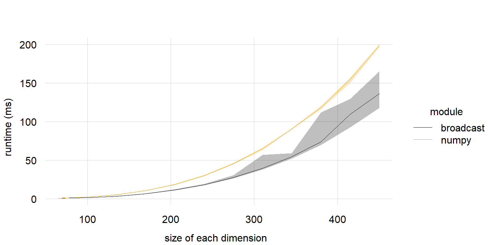
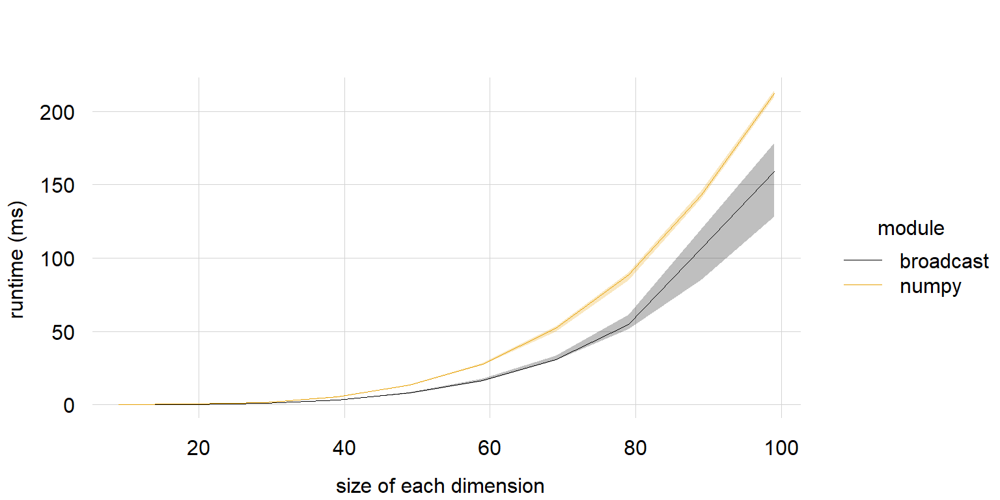
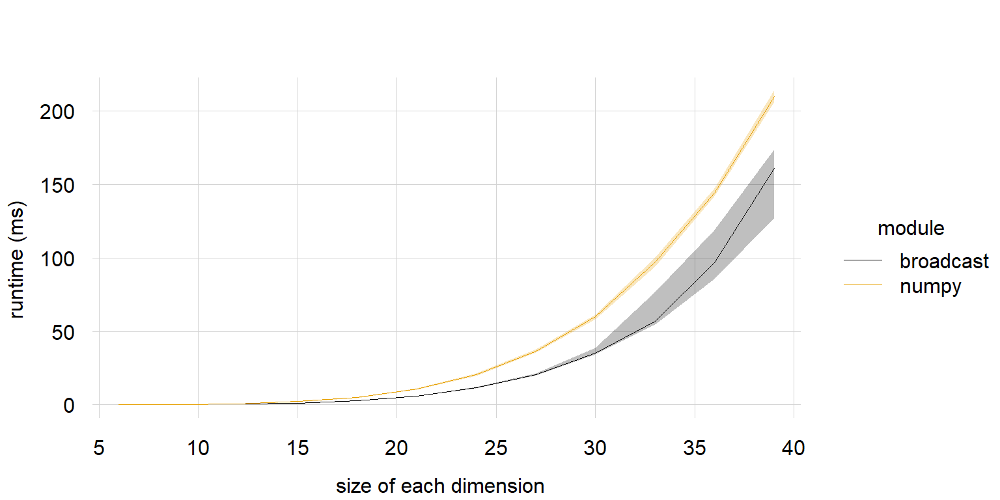
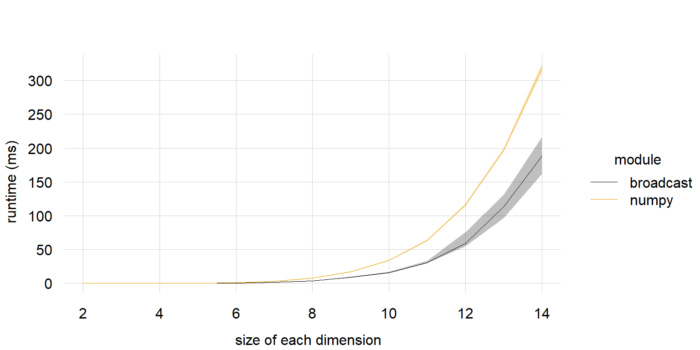

In the context of operations involving 2 (or more) arrays, “broadcasting” refers to recycling array dimensions without allocating additional memory, which is considerably faster and more memory-efficient than R’s regular dimensions replication mechanism.
Before the emergence of the ‘broadcast’ package, if users wished to employ broadcasting, they essentially had to use broadcasting as it existed in a different programming language. For example, they might use the broadcasting as available in the ‘Python’ module ‘Numpy’ (perhaps via the ‘reticulate’ package). Or perhaps they might use the ‘C++’ library ‘xtensor’ via the R-package of the same name (or an extension thereof, like ‘rray’).
With the emergence of the ‘broadcast’ package, users can now call broadcasted implementations without using external libraries, which spares the computing power needed for translating between object structures of different languages.
The “broadcasting” implementation in the ‘broadcast’ package is conceptually (though not programmatically) inspired by the broadcasting employed by the ‘Numpy’ module for ‘Python’, which might be the first implementation of broadcasting. More importantly, ‘Numpy’ is remarkably fast, and the ‘broadcast’ package aims to be somewhat comparably fast.
This page presents the comparisons in the speed of broadcasted operations, between ‘broadcast’ and ‘Numpy’. The operation that is compared is a simple, element-wise, broadcasted addition, given by the code x + y in the ‘Numpy’ module for ‘Python’, and bc.num(x, y, "+") in the ‘broadcast’ package.
Please bear in mind these are rough comparisons of speed. Since the comparisons involve 2 separate programming languages, and ‘Python’, “proper” speed comparison is rather difficult even on a merely conceptual level.
Methodology
Difficulties in comparing with ‘Python’
Benchmarking a ‘Python’ code snippet in ‘Python’ using a ‘Python’ module, and benchmarking an code snippet in using an package, means mechanisms from different modules/packages are used for the benchmarking, and those 2 benchmarks may not (and probably won’t) use the same timing mechanisms.
‘Python’ and are both languages that use garbage collections (GC). But GC really does mess up benchmarking. The way to circumvent this issue differs in ‘Python’ and . In ‘Python’, GC can temporarily be disabled. does not support this (as disabling GC is dangerous), so instead for benchmarks with heavy GC just have to be filtered out.
Comparing the speed of 2 languages is inherently deceptively difficult. And due to the considerations given above, any form of benchmarks between and ‘Python’ - including the ones given in this page - should be taken with a grain of salt.
The Set-Up
The operation that is bench-marked in this study is the operation x + y in ‘Numpy’ and the equivalent bc. num(x, y, "+") in ‘broadcast’.
Here x and y are both decimal numeric arrays (type of 64 bit double in and 64 bit float in ‘Python’), and have the same number of dimensions.
This operation is run for pairs of arrays with different number of dimensions, going from 2 dimensional to 7 dimensional.
So we have x + y where both arrays are 2-dimensional (i.e. matrices), and x + y where both arrays are 3-dimensional, and so on until we have x + y where both arrays are 7-dimensional.
The pairs of arrays are fully orthogonal (“orthogonal” in the sense as explained here), thus the maximum amount of broadcasting will be employed.
Given, for example, 4-dimensional arrays, the dimensions of x are (n, 1, n, 1) and the dimensions of y are (1, n, 1, n).
The value of n, so the size of each dimension, varies as follows:
For 2-dimensional arrays, n goes from 1250 to 9500, with step size 750.
For 3-dimensional arrays, n goes from 65 to 450, with step size 35.
For 4-dimensional arrays, n goes from 9 to 99, with step size 10.
For 5-dimensional arrays, n goes from 6 to 39, with step size 3.
For 6-dimensional arrays, n goes from 3 to 21, with step size 2.
For 7-dimensional arrays, n goes from 2 to 14, with step size 1.
These values n have been chosen as follows. The maximum n is chosen such that the broadcasted element-wise addition of x and y results in an array with approximately 9e7 elements (a little shy of 100 million elements). The minimum n is one-seventh of that value. And the step size is chosen such that the sequence has a length between 10 and 15
For each pair of arrays, the element-wise addition is computed using ‘broadcast’ and ‘Numpy’. This computation is repeated 100 times. From these 100 benchmarks, the median, first quartile, and third quartiles are taken. There are some caveats here, in order to keep the comparisons between ‘broadcast’ and ‘Numpy’ fair, and these caveats are explained in the next sub-section.
Keeping comparisons (somewhat) fair
To keep the comparisons between ‘broadcast’ and ‘Numpy’ fair, a number of measures have been taken.
Distributions of benchmarks tend to be heavily skewed. Therefore, the median measure (together with the quartiles) are taken. The median is also more stable than the mean in the face of outliers.
Garbage collection is disabled in Python. In , only benchmarks with no garbage collection, or level 0 garbage collection, are used. I feel this keeps the comparisons relatively fair (but it’s not perfect).
Since only benchmarks with no garbage collection, or level 0 garbage collection, are used for , the benchmarks are run 200 times, and a check is performed that at least 100 benchmark measurements are kept in. If there are less than 100 benchmarks for a particular computation, the benchmarks are thrown away, and another attempt is made at benchmarking (but this never happened).
In relation to the previous point, note that the quantiles and the median (the median itself is simply the 50% quantile) are asymptotically independent of sample-size (unlike, for example, the variance, which is directly affected by sample size).
has more support for missing values than ‘Numpy’, which also leads to a difference in speed. But both and ‘Numpy’ handle missing values equally in decimal numbers ( 64bit floats in Numpy and 64bit doubles in ), through the NaN construct. Therefore, only operations on decimal numbers are compared.
Operations like power (^) and division (/) need to handle special cases (like when the right-hand side of the operation is 0). I cannot guarantee that ‘broadcast’ and ‘Numpy’ will handle these special cases in the exact same way. The plus (+) operator, however, has no such special cases. Therefore, the comparisons on this page only involve summation.
Resources and Code
The ‘benchmark’ package was used for measuring speed in , as this package can also be used to check and filter for garbage collector calls.
In ‘Python’, the time.perf_counter() function is used to accurately measure the time an operation takes. To ensure no time is wasted on printing the result in ‘Python’, the operation a + b is wrapped inside a function without a return statement.
The plots are created using the ‘tinyplot’ package, to display the median, first quartile, and third quartile, of the computation times.
The benchmarks were run on a laptop (processor: 12th Gen Intel(R) Core(TM) i5-12500H 2.50 GHz) with 32GB of Ram and running Windows 11 (64 bit).
The code used to run the benchmarks can be found at the bottom of this page. version 4.4.0 was used to run the code, and ‘Python’ version 3.12.0 with ‘Numpy’ version 2.2.1 was used to run the ‘Python’ code.
The code was run as a whole in a single command from a freshly started computer; the same goes for the ‘Python’ code, thus ensuring that neither code was slowed down due to prior RAM usage or background processes.
Benchmarks of the element-wise broadcasted addition of 2 decimal numeric arrays, comparing the code x + y in the ‘Numpy’ ‘Python’-module, against the code bc.num(x, y,"+") in the ‘broadcast’ ‘R’-package. Both arrays are 2 -dimensional arrays. The dimensions of x are { n, 1 }; the dimensions of y are { 1, n }. Here, n is shown on the x-axis. The y-axis shows the time (in ms) it took to execute the code. The solid line gives the median time, and the shaded ribbon gives the first and third quartiles. The higher a value is on the y-axis, the more time it takes to execute the code, the slower the code.

Benchmarks of the element-wise broadcasted addition of 2 decimal numeric arrays, comparing the code x + y in the ‘Numpy’ ‘Python’-module, against the code bc.num(x, y,"+") in the ‘broadcast’ ‘R’-package. Both arrays are 3 -dimensional arrays. The dimensions of x are { n, 1, n }; the dimensions of y are { 1, n, 1 }. Here, n is shown on the x-axis. The y-axis shows the time (in ms) it took to execute the code. The solid line gives the median time, and the shaded ribbon gives the first and third quartiles. The higher a value is on the y-axis, the more time it takes to execute the code, the slower the code.

Benchmarks of the element-wise broadcasted addition of 2 decimal numeric arrays, comparing the code x + y in the ‘Numpy’ ‘Python’-module, against the code bc.num(x, y,"+") in the ‘broadcast’ ‘R’-package. Both arrays are 4 -dimensional arrays. The dimensions of x are { n, 1, n, 1 }; the dimensions of y are { 1, n, 1, n }. Here, n is shown on the x-axis. The y-axis shows the time (in ms) it took to execute the code. The solid line gives the median time, and the shaded ribbon gives the first and third quartiles. The higher a value is on the y-axis, the more time it takes to execute the code, the slower the code.

Benchmarks of the element-wise broadcasted addition of 2 decimal numeric arrays, comparing the code x + y in the ‘Numpy’ ‘Python’-module, against the code bc.num(x, y,"+") in the ‘broadcast’ ‘R’-package. Both arrays are 5 -dimensional arrays. The dimensions of x are { n, 1, n, 1, n }; the dimensions of y are { 1, n, 1, n, 1 }. Here, n is shown on the x-axis. The y-axis shows the time (in ms) it took to execute the code. The solid line gives the median time, and the shaded ribbon gives the first and third quartiles. The higher a value is on the y-axis, the more time it takes to execute the code, the slower the code.
Benchmarks of the element-wise broadcasted addition of 2 decimal numeric arrays, comparing the code x + y in the ‘Numpy’ ‘Python’-module, against the code bc.num(x, y,"+") in the ‘broadcast’ ‘R’-package. Both arrays are 6 -dimensional arrays. The dimensions of x are { n, 1, n, 1, n, 1 }; the dimensions of y are { 1, n, 1, n, 1, n }. Here, n is shown on the x-axis. The y-axis shows the time (in ms) it took to execute the code. The solid line gives the median time, and the shaded ribbon gives the first and third quartiles. The higher a value is on the y-axis, the more time it takes to execute the code, the slower the code.

Benchmarks of the element-wise broadcasted addition of 2 decimal numeric arrays, comparing the code x + y in the ‘Numpy’ ‘Python’-module, against the code bc.num(x, y,"+") in the ‘broadcast’ ‘R’-package. Both arrays are 7 -dimensional arrays. The dimensions of x are { n, 1, n, 1, n, 1, n }; the dimensions of y are { 1, n, 1, n, 1, n, 1 }. Here, n is shown on the x-axis. The y-axis shows the time (in ms) it took to execute the code. The solid line gives the median time, and the shaded ribbon gives the first and third quartiles. The higher a value is on the y-axis, the more time it takes to execute the code, the slower the code.
Conclusion & Discussion
The differences in the computation times between ‘broadcast’ and ‘Numpy’ are rather small. It seems reasonable to conclude that, in general, ‘broadcast’ and ‘Numpy’ have somewhat similar speeds.
As stated at the start of this page, comparing benchmarks between ‘R’ and ‘Python’ is deceptively challenging. I am open for suggestions on how to improve the speed comparisons between ‘broadcast’ and ‘Numpy’, and make them more fair.